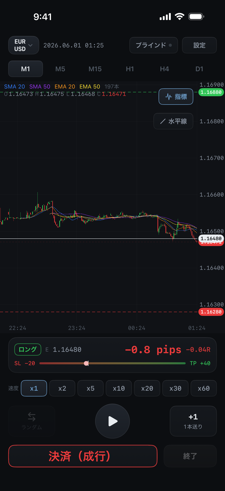

止める、進める、もう一度。
速度x1〜x60、1本送り、ランダムスタート、ブラインドモード。M1・M5・M15・H1・H4・D1を切り替え、SMA・EMAも表示できます。
過去チャートで、トレードを練習。
チャートを再生して、エントリーと決済を試す。
結果を振り返って、次の検証へ。
その一連の流れを、スマホ1台で。
iOS 17.0以降のiPhoneに対応 · アプリ内購入あり
実際の売買や、実口座との連携は行いません。

できること
PCを開かずに検証したい方へ。自分で売買を判断し、その結果を確かめるための機能をまとめました。
速度x1〜x60、1本送り、ランダムスタート、ブラインドモード。M1・M5・M15・H1・H4・D1を切り替え、SMA・EMAも表示できます。
成行注文に、損切り・利確を設定。実際のお金を動かさず、過去チャートで裁量トレードの練習と検証ができます。
勝率、平均R、プロフィットファクター、最大ドローダウン、損益曲線を確認。結果画像を生成してSNSなどへ共有できます。
買い切りで使える累積分析
セッションをまたいだ取引結果を、ペア・時間帯・曜日ごとに確認。自分の検証記録を、別の切り口から振り返れます。
少ない取引数だけで傾向を断定しないことが大切です。過去の検証結果は、将来の成績を保証しません。
無料版と買い切り版
無料ダウンロード。全解放は、任意のアプリ内購入です。
| 機能 | 無料版 | 買い切り版 |
|---|---|---|
| 対象ペア | 3ペア | 全8ペア |
| 検証データの期間 | 直近2年分 | 収録済みの全期間 |
| 再生・注文の練習 | 利用できます | 利用できます |
| セッション結果 | 利用できます | 利用できます |
| 累積分析 | 解放対象の案内 | ペア別・時間帯別・曜日別 |
| セッション保存 | 上限あり | 上限なし |
| 結果の共有画像 | 透かし付き | 透かしを除去 |
無料の3ペア：EURUSD・USDJPY・XAUUSD
買い切りで追加：GBPUSD・AUDUSD・USDCAD・EURJPY・GBPJPY
価格や提供内容は変更される場合があります。購入前に、アプリの購入画面で最新の金額・解放内容をご確認ください。収録期間はペアやデータの提供状況により異なります。
よくある質問
できません。過去チャートを使う練習・検証用のシミュレーションです。実口座との連携、実際の売買、投資助言は行いません。
EURUSD・USDJPY・XAUUSDの3ペア、直近2年分のデータで再生・注文の練習とセッション結果を試せます。保存数には上限があります。買い切りで全8ペア、収録済みの全期間、累積分析、保存数の上限解除、共有画像の透かし除去が解放されます。
いいえ。全解放は1回限りの買い切りです。月額・年額の継続課金はありません。価格は購入画面でご確認ください。
FX検証リプレイは、過去チャートでの裁量トレードの練習と振り返りに用途を絞っています。リアルタイムの売買、証券口座の管理、自動売買プログラムの実行をするアプリではありません。
実際の取引環境を完全に再現するものではありません。過去データの正確性は保証せず、スプレッドは固定値による近似です。H4・日足はUTC0時基準で、NYクローズ基準とは足の形が異なります。
同じApple Accountで購入した買い切り版は、設定または購入画面の「購入を復元」から復元できます。詳しい手順やお問い合わせ先はサポートページをご覧ください。
YOUR NEXT TRADE STARTS HERE.
まずは無料の3ペアから。
自分のペースで、試して、振り返る。
iOS 17.0以降 · アプリ内購入あり